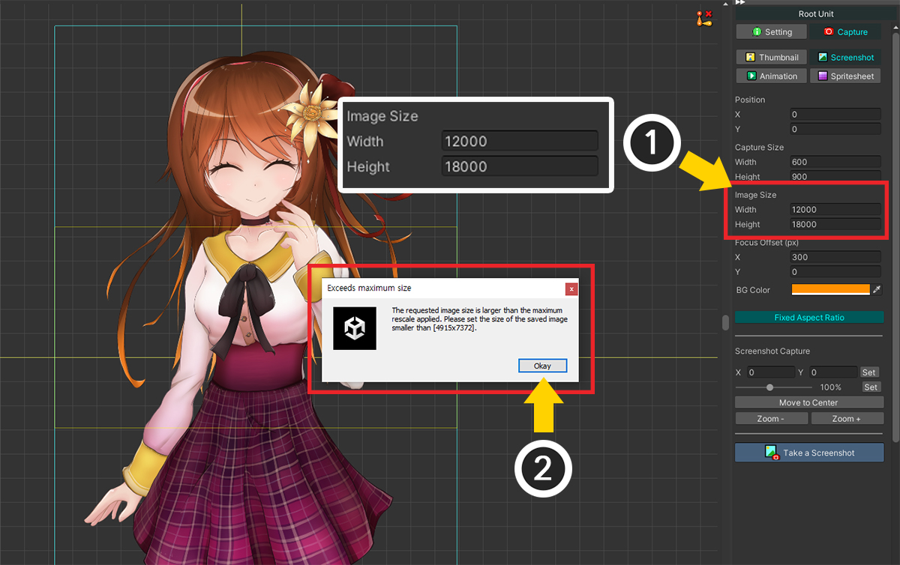
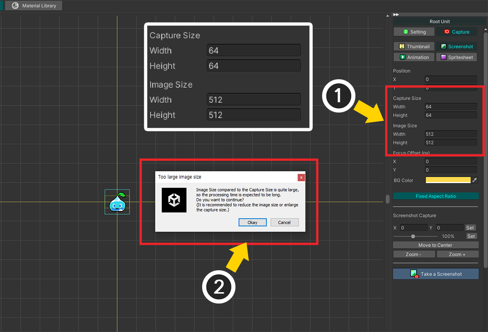

AnyPortrait > 메뉴얼 > 개선된 화면 캡쳐
개선된 화면 캡쳐
1.4.6
사용자들의 피드백을 받아서 AnyPortrait v1.4.6에서 화면 캡쳐 기능이 개선되었습니다.
이 메뉴얼에서는 기존의 화면 캡쳐 기능에서 변경된 점에 대해서 다룹니다.
화면 캡쳐의 기능들에 대한 사용 방법은 "화면 캡쳐" 메뉴얼에서 확인해보세요.
개선된 캡쳐 기능 사용하기

설정 다이얼로그에서 "Capture > Processor"의 옵션으로 Version 1 (Legacy) 또는 Version 2를 선택할 수 있습니다.
- Version 1 (Legacy) : 이전 버전까지의 캡쳐 코드를 이용하여 캡쳐를 수행합니다. 이 방식으로 리소스를 제작하던 분들은 이 옵션을 선택하여 일관성을 유지할 수 있습니다.
- Version 2 : 개선된 코드를 이용하여 캡쳐를 수행합니다. v1.4.6으로 업데이트하면 기본적으로 이 옵션이 선택됩니다.
Version 2를 선택하면 내부적으로 다음의 변경점이 있습니다.
- 기존의 이미지 리사이징 코드가 동작하지 않기 때문에 지나치게 블러가 적용되는 것 같은 문제가 발생하지 않습니다.
- 렌더링의 기본이 되는 에디터 UI의 크기에 따라 렌더 해상도가 왜곡되는 문제가 최소화되었습니다.
- 캡쳐 영역 대비 이미지 크기에 제한이 생깁니다.
- 처리 시간이 다소 증가하였으며, 이미지 크기에 따라서 시간이 크게 증가할 수 있습니다.
Version 2를 선택하면 아래의 차이점들을 직접 확인해볼 수 있습니다.
Unity 2020에서는 캡쳐 프로세서 Version 2가 정상적으로 동작하지 않는 문제가 보고되었습니다.
해당 버전에서는 Version 1을 이용해주시길 바랍니다.
포커스 오프셋

(1) Version 2 옵션으로 화면 캡쳐를 시도하면 새로운 옵션인 Focus Offset (px)를 볼 수 있습니다. 300을 시험삼아 입력해봅시다.
(2) 캡쳐 결과를 보면 캐릭터가 기존보다 300 픽셀만큼 이동한 것을 볼 수 있습니다.
Focus Offset은 캐릭터가 아닌 포커스를 이동시키는 것이므로, 입력된 값의 반대 방향으로 캐릭터가 이동하는 점을 주의해주세요.
Focus Offset (px) 옵션은 캡쳐 영역을 이동시키는 새로운 방법입니다.
캐릭터가 캡쳐되는 위치에 대한 3가지 방법의 차이점은 각각 다음과 같습니다.
- Position 옵션 : 에디터 좌표계 상에서 캡쳐 영역을 이동시킵니다. 작업 공간의 푸른색 사각형이 이동합니다.
- Focus Offset (px) : 저장되는 이미지 파일의 픽셀 좌표계를 기준으로 캡쳐 영역을 이동시킵니다. 픽셀 단위로 이동 시키므로 정밀하게 이동시킬 수 있습니다.
- 작업 공간을 드래그 : 캐릭터의 위치를 이동하는 방식입니다. 빠르고 직관적인 방법이며, 에디터 좌표계를 이용합니다.
크기 제한

이것은 Version 2의 제한점입니다.
이미지 리사이징 코드를 사용하지 않는 대신, 이미지 확대율에 제한이 생겼습니다.
(1) Image Size의 값을 매우 크게 설정해봅시다.
(2) 캡쳐를 수행할 수 없다는 경고 메시지가 나타나서 현재 캡쳐 가능한 최대 해상도를 알려줍니다.
이 크기 제한은 "캡쳐 영역의 크기"와 "실행 기기의 메모리 크기"에 따라서 바뀔 수 있습니다.
이미지 크기의 절대적인 제한이 아닌 캡쳐 영역 대비 상대값이므로, 캡쳐 영역을 확장하면 제한을 피해서 캡쳐를 할 수 있습니다.
픽셀 아트 스타일의 이미지 저장하기
새로운 캡쳐 방식에서는 과도한 이미지 리사이징 코드가 동작하지 않습니다.
그 덕분에, 픽셀 아트 스타일의 이미지를 그대로 캡쳐하는 것이 가능합니다.

픽셀 아트 스타일로 제작된 슬라임 캐릭터입니다.
PSD 임포트를 이용하여 불러왔는데, 위와 같이 약간의 블러가 적용되어 있습니다.

(1) 유니티 에디터의 Assets에서 해당 이미지를 선택합니다.
(2) Filter Mode를 "Point (no filter)"를 선택하고, Compression을 "None"으로 변경합니다. (Mipmap 옵션을 비활성화하는 것도 권장됩니다.)

AnyPortrait 에디터로 돌아가면, 슬라임 캐릭터들의 픽셀들이 선명하게 보여집니다.

이 상태에서 캡쳐를 실행하면 위와 같이 픽셀 아트 스타일의 이미지를 생성하는 것이 가능합니다.
픽셀 단위 캡쳐는 오차가 있어요!
AnyPortrait는 3D 엔진인 유니티용 툴이므로, 정수가 아닌 실수의 위치 값을 가집니다.
따라서 픽셀 단위로 저장을 하고자 했을 때, 위치 오차가 발생하여 원본 리소스와 다른 결과가 나타날 수 있습니다.
이것은 정밀한 픽셀 아트 애니메이션에 적합하지 않을 수 있으니, 주의하여 사용해야 합니다.
이미지 크기에 따라 처리 시간이 크게 증가한 경우
새로운 방식은 이미지 해상도에 따라서 처리 시간이 크게 증가하는 단점이 있습니다.
이 처리 시간은 캡쳐 영역의 크기 대비 상대값에 따른 것이므로, 이 특성을 이해하면 처리 시간을 크게 줄일 수 있습니다.

(1) Capture Size를 "64x64"로 설정하고 Image Size를 "512x512"로 설정한 상태에서 캡쳐를 시도해봅시다.
(2) 처리 시간이 상당히 증가할 것이라는 경고 메시지가 나타납니다.
Okay 버튼을 누른다면 캡쳐가 실행됩니다만, 시간이 꽤 걸릴 것입니다.
"512x512"라는 해상도가 아주 큰 것은 아니지만, "64x64"의 캡쳐 영역 크기 대비로는 각 축당 8배씩 커지기 때문에 확대 비율이 꽤 큽니다.
새로운 버전의 화면 캡쳐 과정에서 중요한 것은 확대율이기 때문입니다.
이 문제를 해결하기 위해서 저장되는 이미지의 크기, 즉 Image Size를 줄이는 것이 가장 간단한 방법입니다.
하지만 반대로 기준이 되는 캡쳐 영역의 크기, 즉 Capture Size를 증가시켜서 상대적인 확대율을 줄이는 것도 좋습니다.

(1) Capture Size를 "256x256"으로 변경합니다. 작업 공간에서 캡쳐되는 프레임이 커지는 것을 볼 수 있습니다.
(2) 캡쳐 UI의 도구를 이용하여 확대된 캡쳐 영역에 맞게 캐릭터를 정밀하게 이동, 확대합니다.
(3) 캡쳐 영역 프레임에 맞게 캐릭터가 확대된 것을 볼 수 있습니다.
(4) 이제 캡쳐를 실행하면, 경고 메시지도 나타나지 않고, 길지 않은 시간동안 이미지가 생성되는 것을 볼 수 있습니다.